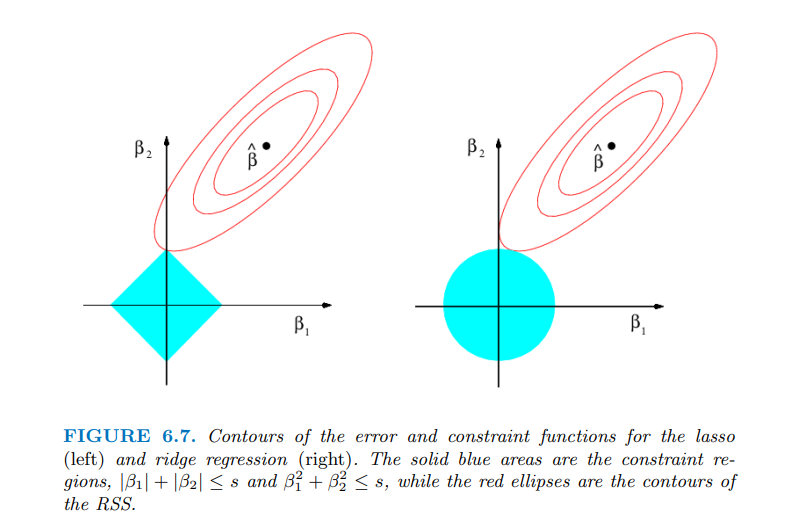

The notion of Regularization arises because of overfitting. So, let’s start with overfitting then. I will keep aside all fancy definition. Overfitting simply means when your model does good on the training data but performs poor on the testing data. In other words, the inadequacy of model to be generalized. The regularization adds the penalty term to reduce the overfitting.
In Statistical Learning/Machine Learning there are in general 2 kinds of Regularization. They are as follows:
These regularization techniques follow the same procedure to find the optimal weights as discussed in Gradient Descent. The only difference is, we add the penalty/regularized term on the cost function. In particular we add: \[\lambda \sum_{j=1}^n \theta_{j}^2 \tag{1}\]For instance, if we take the simple Linear Regression with MSE (Mean Squared Error) as our cost function then the cost function with regularization will look like: \[\text{Error}=\frac{1}{n}\sum_{i=1}^n\bigg((y_{i} - \sum_{j =0}^p \theta_{j}x_{ij})\bigg)^2 + \lambda \sum_{j=1}^n \theta_{j}^2\]
In this equation, \({x_{10}, x_{20}, \ldots, x_{n0} = 1}\). The same formula can be represented in this way too: \[\frac{1}{n} \sum_{i=1}^n \bigg(y_{i}-\theta_{0}-\sum_{j=1}^p \theta_{j}x_{ij}\bigg)^2 + \lambda \sum_{j=1}^n \theta_{j}^2\]. These are just different way of saying the same thing just to confuse novice people and also to make it look fancy. Forget all those fancy formula just remember: \[\frac{1}{\text{number of obs.}}\bigg(\text{truth} - \text{predicted}\bigg)^2 + \text{regularization penalty}\] This is much easier. As we already know, \(\theta\)’s are the weight/coefficients. You might noticed or not but our weights starts with \(\theta_{0}\). Weights are the vector that looks like \([\theta_{0},\theta_{1},\ldots,\theta_{n}]\). If you put close attention to \(Eq1\), you see that we are summing the weights from \(\theta_{1}\), excluding \(\theta_{0}\) in the regularization penalty term. I found very straight forward reason in ISLR Book,"We want to shrink the estimated associations of the each variable with the response; however, we do not want to shrink the intercept, which is simply a measure of the mean value of the response when \(x_{i1} = x_{i2} = \ldots = x_{ip} = 0\)."
Now, the general question is why the regularization works better than the simple regression methods. The reason lies in the bias-variance tradeoff. Bias-Variance tradeoff could be a whole new topic, but I will try to explain it in as minimal as possible. You can check out this for more info.
Take a instance, where you have a overfitted linear model, meaning the response and the predicted are close to linear in training data but poor on the testing data. This means the model has high variance and low bias. So, in order to decrease the variance, we introduce small bias. Small increase in bias can decrease the large variance. Therefore, the ridge regression or regularization performs better when we have high variance in our model. I know, you lost me in this paragraph but we will discuss this thing much more in details on our future post.
You may have noticed that in the Ordinary Least Square (OLS) regression, scaling doesn’t have any effect on the \(\beta\). (Please note, I am taking about OLS. Regression using Gradient Descent should be scaled for efficient convergence). However, for the Ridge Regression the data has to be scaled to get the correct intrepretable results. So, scale the data before performing Ridge Regression or any regularization.
One obvious disadvantage of the Ridge regression is that, ridge regression includes all predictor/features in the final model. This might not be the problem in term of accuracy however might give hard time in interpreting the results. With the increasing value of the \(\lambda\), the magnitudes of the coefficient reduces but never reaches to zero. Therefore, the LASSO regression comes to rescue. In LASSO regression we add, the following penalized term to the cost function: \[\lambda \sum_{j=1}^{p}|\theta_{j}|\]Instead of squaring the betas, in L1 we take the absolute value of the coefficients and sum them. Similar to the ridge regression, LASSO also shrinks the coefficients/weights towards zero. However, LASSO also can force some coefficients estimates equal to be zero when the tuning parameter is sufficiently large.
We have heard and may be utilized the step-wise regression to do the variable selection. In the similar manner, LASSO can be used to perform the variable selection. Therefore, the model generated by the LASSO are easily interpretable as compared to Ridge.
Now, as we already know that majority of the model performance depended upon the right selection of \(\lambda\). We choose a grid of \(\lambda\) values and then compute the cross-validation error for each value of \(\lambda\) to get optimal value of \(\lambda\).
There is also third variation of the regularization that combine both L1 and L2. It is called Elastic Net. The formula for the elastic net looks like: \[\frac{1}{n}\sum_{i=1}^n\bigg((y_{i} - \sum_{1}^p \beta_{j}x_{ij})\bigg)^2 + \lambda_{1} \sum_{j=1}^n \theta_{j}^2 + \lambda_{2} \sum_{j=1}^{p}|\theta_{j}|\]
Majority of time, people have explained above question with the below figure which I extracted from ISLR book.

In simple explanation, the contour is our cost function and diamond (L1) and circle (L2) are our regularization constrains. From the ISLR book,“The Ridge regression has a circular constrains with no sharp points which will not occur on the axis so the estimates will be exclusively zero. However, for Lasso, because of the corners at each of the axis, the ellipse often intersect the constrain region at an axis making the coefficients zero.” Please refer to the ISLR book or this article for in-depth explanation.
I know, it took me a long time to understand this concept too. However, there is another angle to look at the same explanation. I have made a small video that will help you to understand the same concept with different approach.
Please, check out this link or click on the below picture to watch video.
James, G., Witten, D., Hastie, T., & Tibshirani, R. (2013). An introduction to statistical learning (1st ed.) [PDF]. Springer.